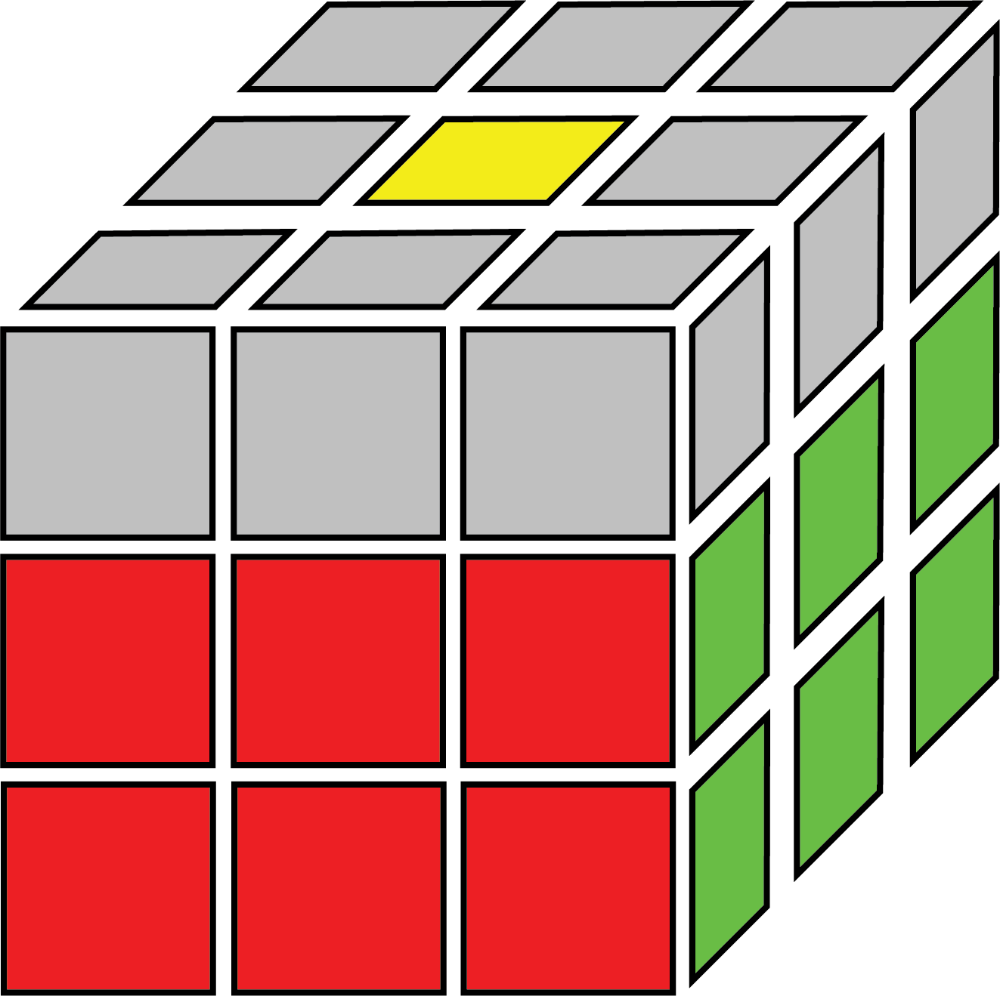
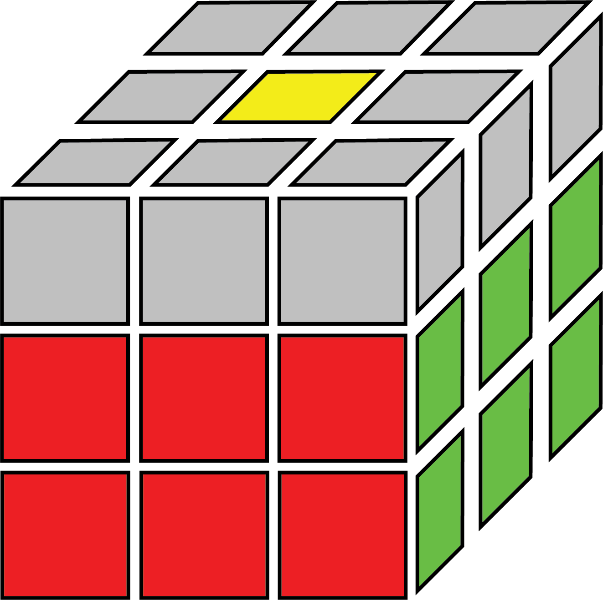

How to Solve the Rubik's Cube: Beginner's Method
Introduction
This will be a simple Rubik's Cube tutorial, with the intention of teaching someone who has never solved the cube the simplest method to do so. For this method, there will be only a few algorithms to learn, or about 2 for each step. With a few days of practice, you should be memorize all the algorithms and solve the cube in under 4 minutes each time.
The Beginner's method divides the Rubik's Cube into 3 layers, and is considered a layer-by-layer method, simliar to the CFOP method. There are 7 steps in total, 2 for the first layer, 1 for the second layer, and 4 for the last layer. We begin by making a white cross, then solving the white layer. For the second layer, there are 4 edges that need to be put into the right positions. For the last layer, we first orient the yellow edges (yellow cross), and then make orient all the corner pieces after; this is called 2-look OLL (Orient Last Layer). However, while all the yellow faces are pointing in the right direction, the pieces are in the wrong positions. This requires PLL (Permute Last Layer) to fix, we will move the corners to the right position, then the edges. After 2-look PLL, we will have completed the beginner's method and (hopefully) solved the Rubik's Cube!
To start learning the Beginner's method, start with the White Cross.
Steps:

 
